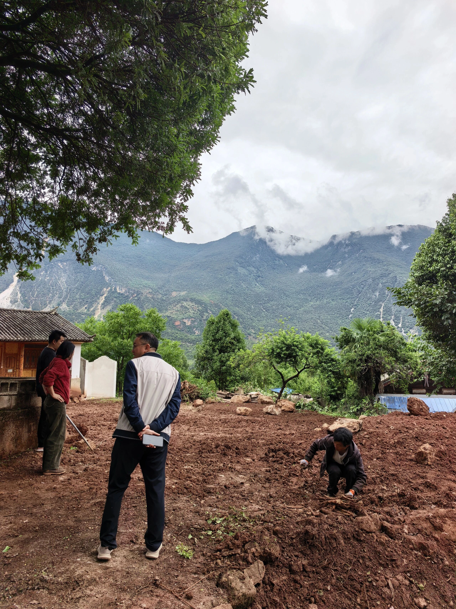
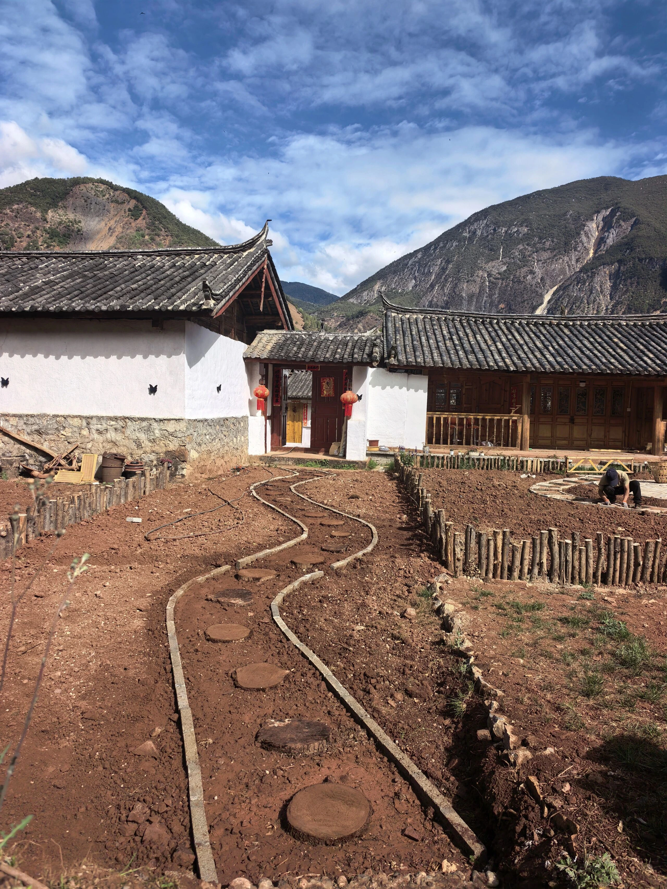
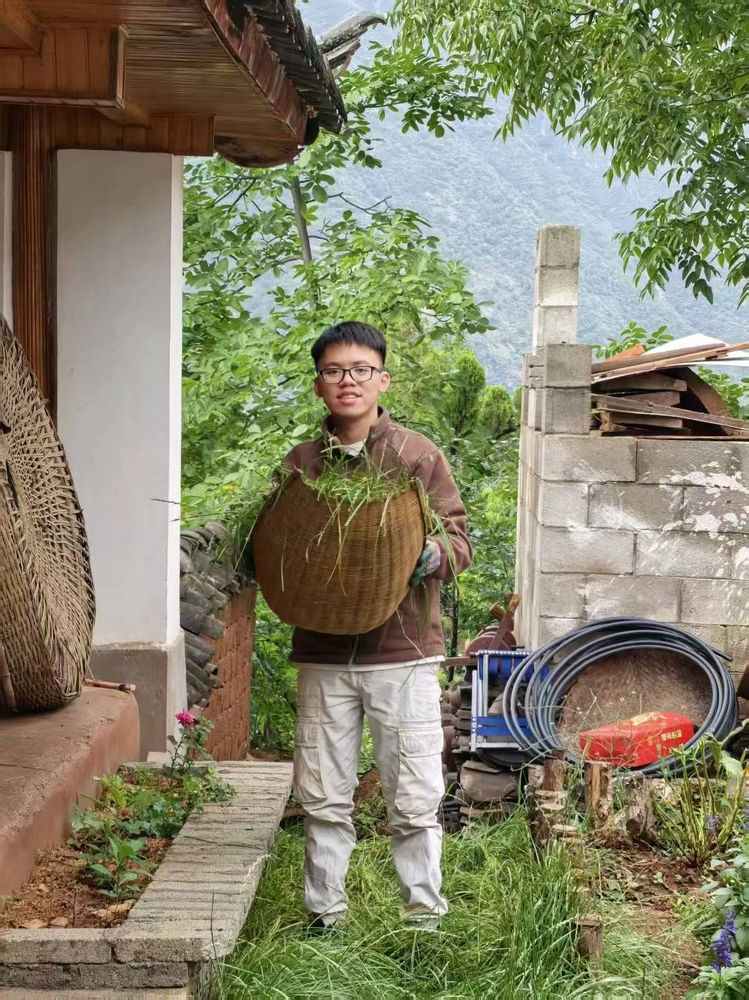
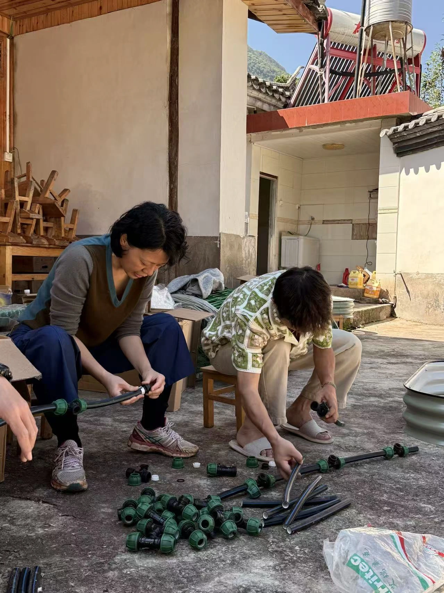
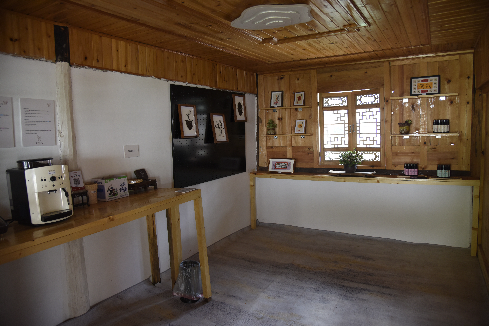
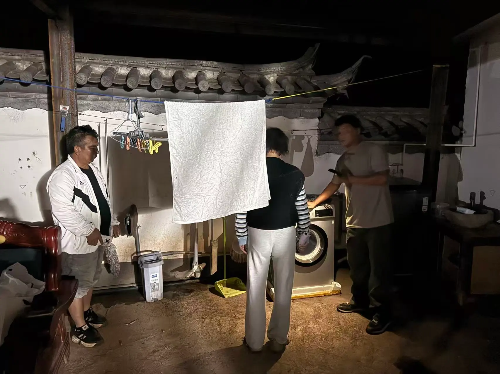
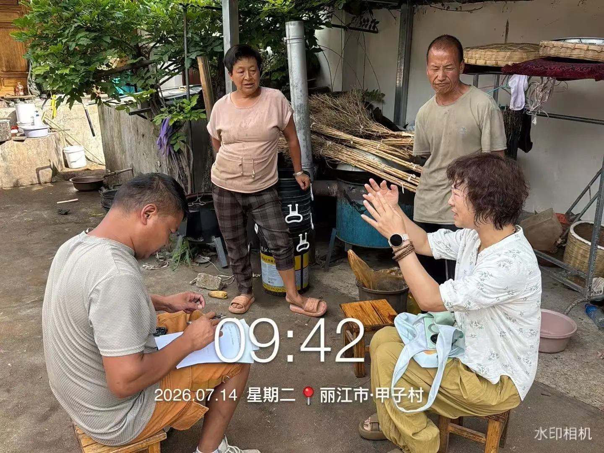
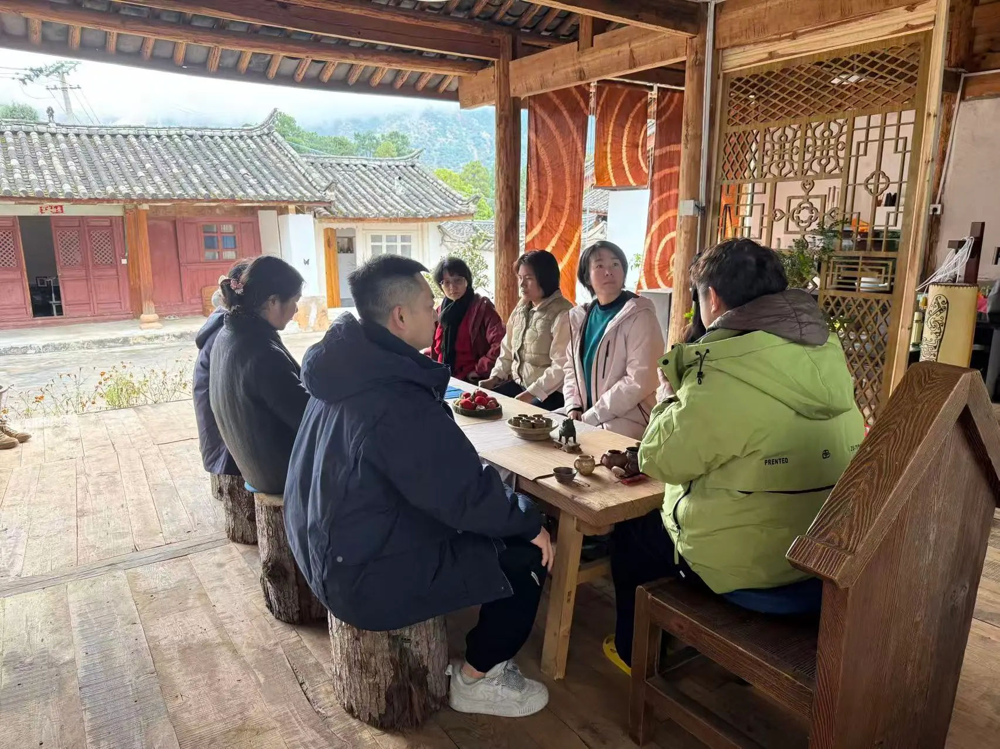

Remote location
Long-distance logistics made sourcing and transporting renovation materials slower and more expensive.
Jiazi Village is a rural transformation project working to regenerate underused traditional courtyards into an international eco-residential community. My role was to translate ambitious ideas into spaces, systems and day-to-day operations that could actually work in the village.

The village sits deep within the Yulong Snow Mountain area. That meant every decision—from sourcing materials to coordinating people—had to work within practical, cultural and financial constraints.
Long-distance logistics made sourcing and transporting renovation materials slower and more expensive.
There was little access to specialised renovation labour, so implementation depended heavily on available local workers.
Strict budgets required us to reuse and adapt materials already available in the village wherever possible.
Different working practices, local traditions and communication styles made new ideas slower to align and implement.
The project's sustainable-development model carried a longer return horizon than a conventional short-term commercial pitch.
Together with the team, we developed transformation ideas for each courtyard. My responsibility was to convert those ideas into visible, workable renovation and then build the systems needed to operate the spaces.
Translate the intended purpose of each courtyard into a clear project direction and practical brief.
Jiazi Village was not a collection of separate renovation projects. The operating idea was to turn underused village assets into spaces that could support people, programmes and ongoing activity. This is the chain I worked inside.
PHYSICAL INFRASTRUCTURE → OPERATING INFRASTRUCTURE → HUMAN PARTICIPATION → VILLAGE ACTIVITY
Traditional courtyards and village land were the starting assets. The question was not simply how to renovate them, but how each could gain a useful role inside a wider village model.
Original project design material below shows the courtyard system and intended relationships between spaces. These boards are kept as source evidence; the interactive model above explains how I understood the operating logic behind them.

The garden shows the full implementation cycle clearly: an underdeveloped courtyard, physical path and planting work, and finally a functioning landscaped environment integrated with the Cultural Hub.
Limited materials and specialist labour.
Work with local labour and adapt materials already available.
A completed garden connected to the cultural space and visitor experience.


The Cultural Exchange Hub is the clearest example of how the work moved from design intent into physical delivery and then into active use.



The physical spaces needed operating systems. My responsibilities extended into visitor coordination, daily routines, basic SOPs and programme economics.
Check visitor needs, report to local authorities where required, coordinate transport, food and accommodation, and guide groups through the village project.
A 7-day Growth Camp cost model covered accommodation, catering, facilitators, logistics, activity budgets, safety and unit economics—bringing operational reality into programme design.
Community events were structured around co-creation, participant engagement and next-step follow-up rather than one-off attendance.
A large part of the project was stakeholder work: aligning the core team, local villagers, workers, visitors and cultural contributors around practical next steps.



The spaces became infrastructure for visitor groups, cultural exchange, youth activities and place-based programmes. Cultural programming also required technical coordination and careful translation between local knowledge and a wider audience.


A Dongba culture session was designed as a 90-minute interview, demonstration and audience-interaction format, with technical execution integrated into the programme.
The Youth Hub needed more than a renovated room. I established the foundations for use through house rules and basic daily operating routines.
The café was developed as a self-service model, requiring service flow, cleanliness expectations and practical operating procedures—not only interior setup.
The work was not simply to renovate courtyards. It was to move from idea → space → system → operation so the project could function in the real world.
Give me a complex idea, limited resources and multiple stakeholders. My job is to make the pieces work together.
← BACK TO SELECTED WORK